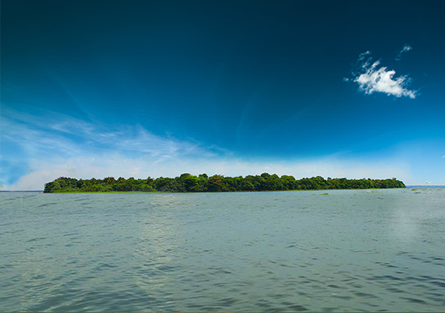
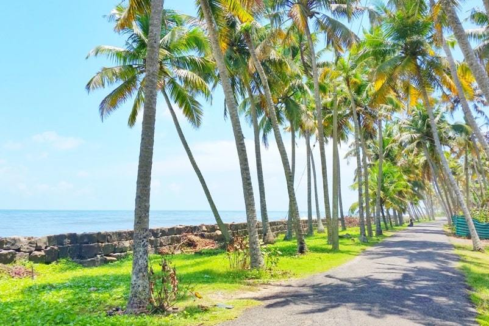
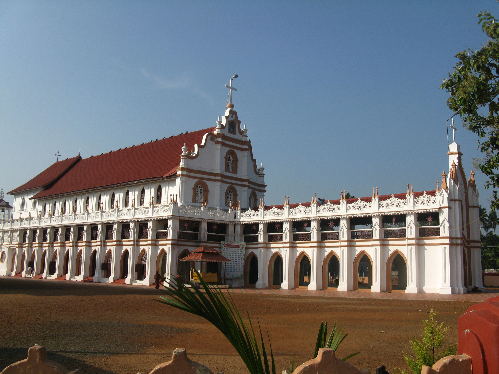

Alappuzha

Alappuzha, also known by its former name Alleppey is considered to be the oldest planned city in this region and the lighthouse built on the coast of the city is the first of its kind along the Laccadive Sea coast. A town with canals, backwaters, beaches, and lagoons, Alappuzha was described by George Curzon, Viceroy of India at the start of the 20th century, as the "Venice of the East". Hence, it is known as the "Venetian Capital" of Kerala.
Top Spots
Pathiramanal Island

Krishnapuram Palace
Alleppey Lighthouse
Marari Beach
float: left;padding-right: 30px

St. George Forane Church, Edathua

Pathiramanal is a bird watcher's paradise. This small island on the backwaters is a safe haven for hundreds of rare migrating birds. A 1.5 hour motor boat ride or a 30 minute speedboat trip from Alappuzha gets you here. Surrounded by the Vembanad Lake, stretching from Alappuzha to Kochi and the Kayamkulam Lake, Pathiramanal is accessible only by boat. It is an ideal pit stop in the middle of a houseboat ride.
The name 'Pathiramanal' means 'Sands of Night'. Estimates say that the area has 91 local species of birds and 50 migratory birds. One can see Pintail Ducks, Common Teal, Night Heron, Cormorant, Darter, Indian Shag, Purple Heron, Cattle Egret, Indian Pond Heron, Little Egret, Bronze-winged Jacanas, Stork-billed Kingfisher, Whistling Duck, Cotton Pygmy-Goose, Little Cormorant and Whiskered Tern. Avid bird watchers will indeed find few other places that rival Pathiramanal.

The Krishnapuram Palace is a palace and museum located in Kayamkulam near Alappuzha. It was built in the 18th century by Anizham Thirunal Marthanda Varma (1729-1758 AD), the Travancore kingdom. It is built in the architectural style of Kerala with gabled roof, narrow corridor and dormer windows, near the Krishnaswamy Temple at Krishnapuram.
The palace contains exhibits that belonged to the Palace and its former occupant, the Travancore Maharaja Marthanda Varma. It is also famous for a large pond within the palace complex. It is also said that an underground escape route runs from the bottom of the pond as a possible escape route from enemies.
Among the many Kerala-style paintings seen in the palace, a distinctly placed mural painting is titled "Gajendra Moksham" of 154 square feet size, which is said to be the largest such find in Kerala. It is placed on the western end of the ground floor of the palace.
The double edged Kayamkulam Vaal (sword) is also on display here. The palace houses, in its courtyard, one of the four statues of Buddha found in Alappuzha District.

Famous as the Alappuzha lighthouse, the Alleppey lighthouse can be spotted from miles away. A humongous tower celebrating the solitude by the coastal strip wearing strips of red and white is how it is best reminisced.
The phenomenal tower was first installed in March 1862, almost 148 years ago. Located at around 4 kilometers ahead of the Alappuzha town, Alleppey or Alappuzha lighthouse grants a panoramic 360-degree view of the ocean as well as the territorial land of Alleppey which is majorly thick and lush foliage.
Flaunting its badge of being one of the oldest lighthouses of Kerala, its construction dates back to the time when Marthanda Varma- II Maharaja owned the throne of the region.
If you want to unwind completely, then the Marari Beach is a must-visit destination for you. The sleepy little village located close to Marari Beach is what makes this beach distinct and attractive, inviting people from all over the world to learn and understand the culture of the Indian state of Kerala.
This beautiful destination is known for being a beach symphony, thanks to its glistening sands and crystal clear waters. Watching sunrise and sunset here is quite a romantic experience that couples would love to enjoy. The place is rated as one of the World's Top five Hammock Beaches by the National Geographic Survey.
Marari Beach is known for providing unique experiences to travelers. Taking them away from modern life, this beach gives them an opportunity to unwind and to enjoy the different facets and bounties of life and nature. The village by the sea is one of the best places to visit in Alleppey where one can go to learn more about the culture and heritage of Kerala.
This famous church is known for celebrating huge feasts during the month of May. The church is also popular for its Christian and non-Christian pilgrims.
Since the church is located close to the below sea level area, therefore travelers can enjoy agricultural lands and rice farms that are seen separated through the rivers. The environs here are enchanting, with mud levees being used for separating runs which are nothing less than a highway or street that one would find in New York. A massive shrine at Edathua is located close by. The shrine features architecture similar to that of the churches in Medieval Europe.
The church itself was built in 1st century AD and is said to be built by St. Thomas himself, who was a disciple of Jesus Christ. The annual feast that is celebrated here starts on the 27th of April and concludes on the 7th of May. The feast sees St. George carried out, decked in golden colored regalia. Special church prayers are sung and some of them even feature the Syrian dialect of Hebrew.